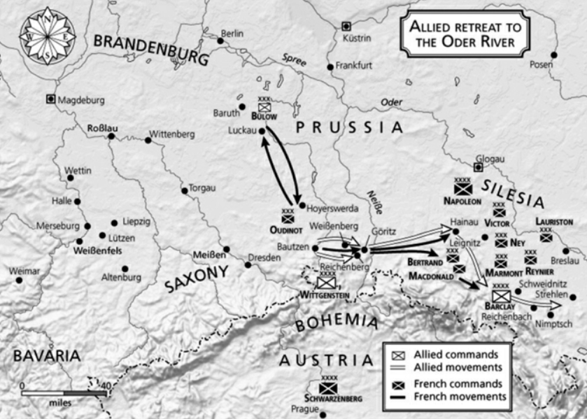
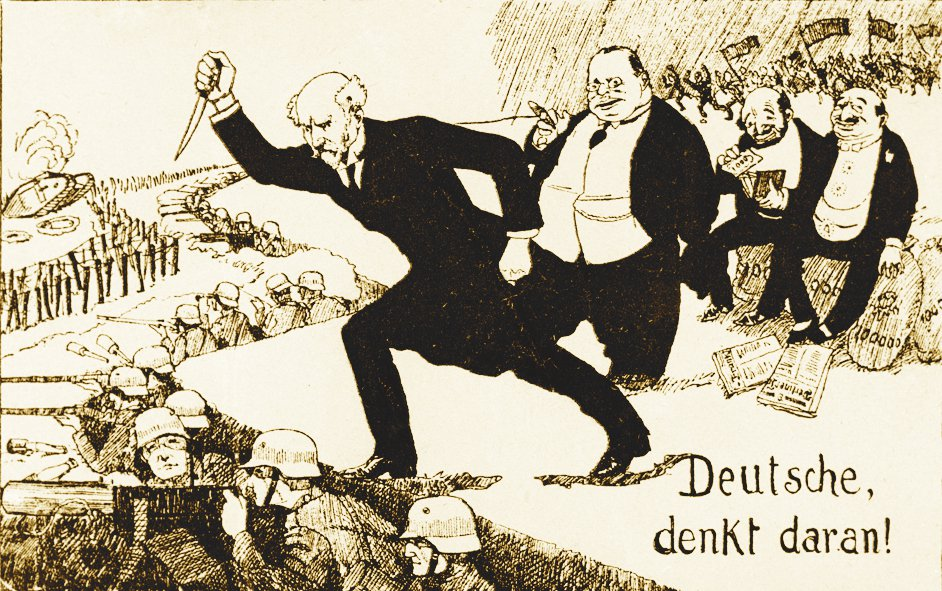
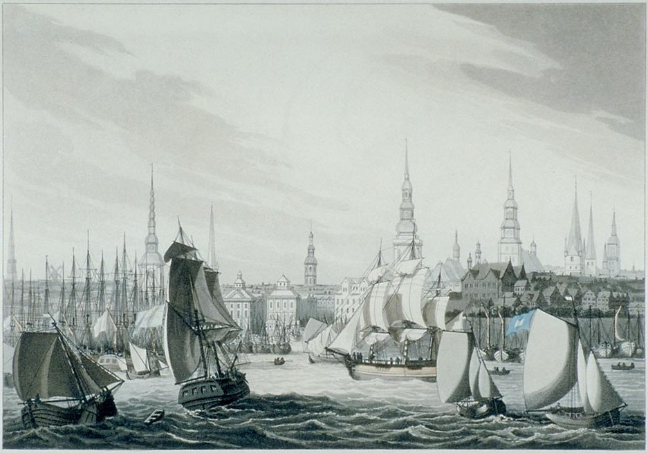

휴전 (4) - 땅을 치고 후회할 결정
게시: 2023-07-24T06:30:20+09:00
그나이제나우는 5월 31일 이같은 생각을 바클레이에게 펼쳐놓고는, 자기가 생각해봐도 완벽한 자신의 논리와 작전안에 스스로 감동하여 바클레이가 이 작전안에 찬성할 수 밖에 없다고 확신하고는 자신의 부인에게 보내는 편지에서 곧 전투가 벌어진다고 소식을 전했습니다. 그러나 바클레이의 대답은 단호하게 일관적이었습니다. 즉, 러시아군은 결코 전투를 수행할 수 있는 상태가 아니며, 이번 기회에 오데르 강을 건너 후퇴해야 한다는 주장만 되풀이했습니다. 하지만 프로이센의 감언이설에 넘어간 짜르의 명령 때문에 슈바이트니츠에 발이 묶인 상태이다보니, 바클레이가 내세운 계획은 최대한 버티면서 시간을 끌되, 만약 나폴레옹이 공격해오면 그 일대의 구릉 지대에서 메뚜기 뛰듯 옮겨다니며 계속 농성한다는 것이었습니다. 바클레이는 나폴레옹과 대규모 회전을 치를 생각이 1도 없었습니다. 그는 오히려 클라이스트와 요크의 군단에 배속되어 있던 일부 러시아군 연대들을 다시 러시아군 장성의 군단으로 재배치하는 등 프로이센군과 이별을 준비하는 듯한 행동을 보여 주었습니다. 이런 답답한 상황 속에서 그나이제나우는 하르덴베르크와 편지를 주고 받으며 자신이 예전부터 주장하던 계획, 즉 러시아군이 폴란드로 떠난다면 프로이센군은 슐레지엔 여기저기의 요새에서 농성하며 브란덴부르크 등 프로이센 기타 영토로부터 국민방위군(Landwehr)을 편성하여 프랑스군에게 끝까지 저항한다는 계획의 구체적인 실행을 의논했습니다. 급기야 프로이센군 총사령관인 블뤼허도 국왕 프리드리히 빌헬름에게 편지를 보내 러시아군과 결별하고 프로이센군 독자적으로 반나폴레옹 전쟁을 이어갈 준비를 해야 한다고 호소했습니다. 연합군은 이제 스스로 붕괴되기 일보직전이었습니다. 그러나 역사의 운명은 러시아와 프로이센 편이었습니다. 과연 연합군을 구원해준 것은 무엇이었을까요? 그나이제나우가 바클레이와 헤어질 결심을 하던 5월 31일, 나폴레옹은 모르고 있었지만 그의 위치는 위에서 보셨다시피 너무나도 유리했습니다. 기병대가 없어서 그가 움켜쥐지 못하던 적군은 뜻밖에도 수데텐 산맥을 등 뒤에 둔 슈바이트니츠로 방향을 틀어 스스로 막다른 골목으로 들어갔습니다. 여태까지 보셨듯이 연합군이 이런 악수를 둔 것은 오스트리아의 참전이 200%의 효과를 내기 위해 나폴레옹을 끌어들이자는 것이었고, 나폴레옹도 그 의도를 눈치 채고 당황했습니다만, 결정적으로 오스트리아는 아직 참전할 준비가 완료되지 않은 상태였습니다. 약속한 선전포고 날짜를 자꾸만 슬금슬금 뒤로 미루던 오스트리아는 일단 6월 10일에 선전포고를 하겠다고 다시 미덥지 못한 약속을 했으나, 그 10일 동안 연합군은 붕괴되기 일보직전이었습니다. 바클레이로 대표되는 러시아군은 오데르 강을 건너 폴란드로 후퇴할 기세였고, 프로이센군은 러시아군과 결별을 준비하고 있었습니다.

(휴전 조약 직전의 양군 대치 상황입니다. 보시다시피 나폴레옹의 후방 보급선은 오스트리아 국경을 따라 너무 길게 늘어져 있습니다. 저 상황에서 오스트리아가 딴 마음을 먹으면 프랑스군은 허리 잘린 뱀이 되는 신세였습니다.) 연합군이 그렇게 스스로 판 무덤에 들어가 내분을 일으키는 동안, 나폴레옹은 브레슬라우 등 오데르 강변의 주요 도시와 다리들을 점거하여 러시아군과 그 후방 기지와의 보급로를 차단할 수 있었습니다. 이제 나폴레옹이 할 일은 야우어에서 브레슬라우에 넓게 분산된 프랑스군을 집결시켜 슈바이트니츠의 연합군을 공격하는 것 뿐이었습니다. 그는 36시간이면 그렇게 병력을 모을 수 있었고 48시간 안에 연합군과 결전을 치를 수 있었으므로, 6월 10일 오스트리아가 선전포고를 하기 전에 이 전쟁을 완전히 끝낼 수도 있었습니다. 하지만 나폴레옹은 오스트리아의 내부 사정도, 연합군의 내부 사정도 몰랐습니다. 그의 눈에 보이는 겉모습은 이미 사실상 연합군에게 가담한 오스트리아를 믿고 오스트리아 국경을 등진 채 자신에게 어서 공격해보라고 손짓하고 있는 연합군의 모습이었습니다. 오스트리아 국경 안으로 또 끝없이 도망쳐 갈 연합군을 기병대 없이는 도저히 잡을 수 없었고, 또 연합군이 오스트리아 국경 안쪽으로 후퇴할 경우 보헤미아에 집결한 오스트리아의 10만 대군이 이제 대놓고 참전할 것이었습니다. 그렇게 되면 오스트리아 국경을 끼고 길게 늘어진 프랑스군이야말로 삽시간에 퇴로를 끊기고 고립될 판국이었습니다. 이때 당장 필요한 것은 오스트리아의 장인어른에게 사위 등에 칼을 꽂는 경거망동을 삼가라고 설득하는 것이었습니다. 그리고 그러자면 시간이 필요했습니다.

(등 뒤에 칼을 꽂는다는 표현은 최근 러시아의 프리고진의 쿠데타 시도에서도 나왔듯이, 상황이 안 좋은 쪽이 그걸 남탓하기 위해 주로 쓰는 표현입니다. 마치 이 그림에서처럼요. 이 그림은 제1차 세계대전에서 독일이 진 이유가 독일 내의 부유한 유태인들이 열심히 싸우는 게르만 청년들의 등 뒤에 칼을 꽂았기 때문이라는 선동입니다. 저기에 쓰인 독일어는 Deutsche, denkt daran! 즉 독일인들이여, 기억하라! 입니다.)
그래서 나폴레옹은 결정적인 순간에 양보를 합니다. 프랑스군과 연합군 사이에 제2차 휴전 회담이 프랑스군이 점거한 야우어(Jauer) 동쪽 작은 마을에서 벌어졌는데, 프랑스군을 대표하여 나온 콜랭쿠르가 연합군에게 오데르 강을 경계선으로 하자는 예전 요구 사항을 철회하겠다고 크게 인심을 쓴 것입니다. 연합군, 특히 프로이센이 도저히 받아들일 수 없었던 오데르 강 서쪽을 다 내놓으라는 요구 조건이 사라지자, 사실 자신들도 내부 사정이 매우 좋지 않았던 연합군 측에서도 못 이기는 척 휴전에 동의했습니다. 이들은 당장 6월 2일 오후 3시부터 36시간 동안 교전 행위를 중단하기로 했고, 이어서 6월 4일 정식으로 휴전 조약서에 서명이 되었습니다. 이것이 플레슈비츠(Pläswitz) 조약입니다. 그리고 나폴레옹은 나중에 세인트 헬레나 섬에서 1813년 6월 초의 이 결정을 두고두고 후회했습니다. 플레슈비츠 조약의 내용은 나폴레옹이 필요로 하던 바에 크게 못 미쳤습니다. 일단, 그가 콜랭쿠르에게 처음 요청했던 주요 사항, 즉 기병대의 보충과 재편성을 위해 휴전 기간은 반드시 2개월 반 이상이어야 했던 내용이 받아들여지지 않아 7주, 즉 7월 20일까지로 정해졌습니다. 게다가 그가 군을 위험할 정도로 길게 늘어뜨리면서까지 점령했던 브레슬라우를 중립지역으로 내줘야 했습니다. 물론 연합군도 일부 양보는 했습니다. 가령 아직 연합군에게 항복하지 않고 포위되어 있는 슈테틴(Stettin)과 퀴스트린(Küstrin) 등의 오데르 강의 요새는 물론, 단치히(Danzig)와 뫼들린(Mödlin) 등 폴란드 비스와 강변의 요새들에게까지 연합군이 5일에 1번씩 충분한 식량을 제공해주기로 했습니다. 전체 작센이 프랑스군의 점유지로 인정되는 것은 물론이었습니다. 그리고 나폴레옹이 주장하던 점유지 유보의 원칙을 약간 더 확장하여, 소위 제32 군사지역 (32nd division militaire) 내에서 6월 8일 자정까지 프랑스군이 점령하는 곳은 어떤 곳이든 프랑스군의 소유로 인정했습니다. 제32 군사지역이란 북부 독일의 옛 한자 동맹 지역을 말하는 것으로서 함부르크와 뤼벡 등을 포함하는 중요 경제 지역이었습니다. 나폴레옹은 이 곳에 다부를 보내 모조리 점령하게 한 바 있었는데, 다부는 그 기대를 버리지 않고 6월 8일 이전에 모두 점령을 끝냈습니다.

(그림은 1814년 함부르크 항구의 분주한 모습입니다. 제32 군사지역은 Bouches-de-l’Elbe(엘베 강 하구), Bouches-de-Weser(베저 강 하구), 그리고 l’Ems-Supérieur(엠스 강 상류)의 3개 행정 구역으로 구성됩니다. 한 줄 요약하면 북부 독일의 해외 무역 전체를 움켜쥔 알짜배기 땅입니다.) 이렇게 휴전을 통해 각각 나름대로 한숨을 돌린 나폴레옹과 연합군은 즉각 바삐 움직였습니다. 이들이 각각 향한 곳은 어디였을까요? Source : The Life of Napoleon Bonaparte, by William Milligan Sloane Napoleon and the Struggle for Germany, by Leggiere, Michael V https://en.wikipedia.org/wiki/Truce_of_Pl%C3%A4switz http://www.historyofwar.org/articles/armistice_pleischwitz.html https://en.wikipedia.org/wiki/Bouches-de-l%27Elbe https://www.annefrank.org/en/timeline/193/the-stab-in-the-back-legend/